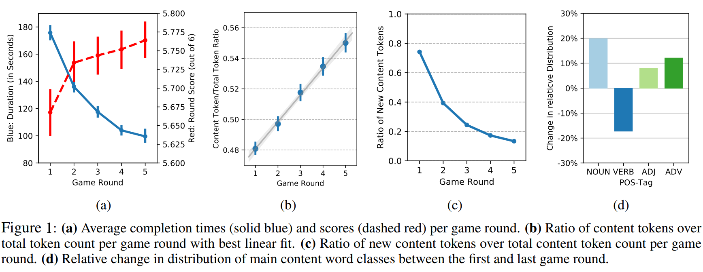
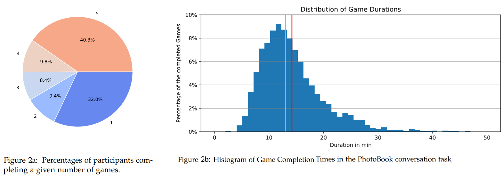
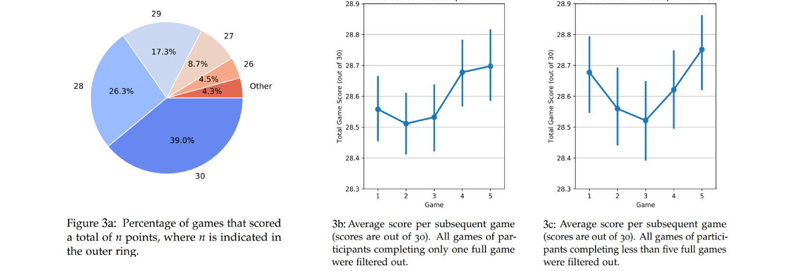
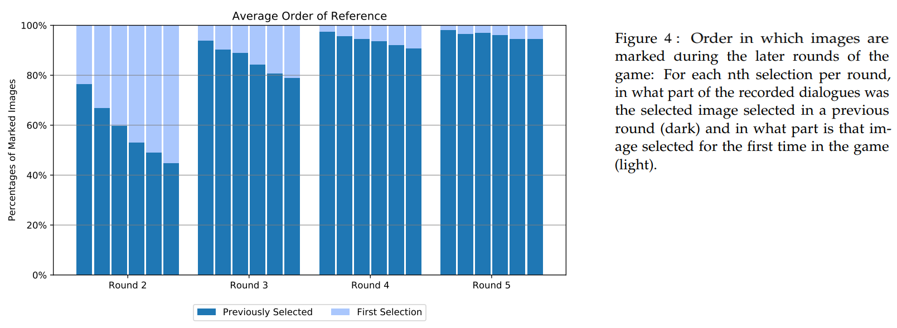
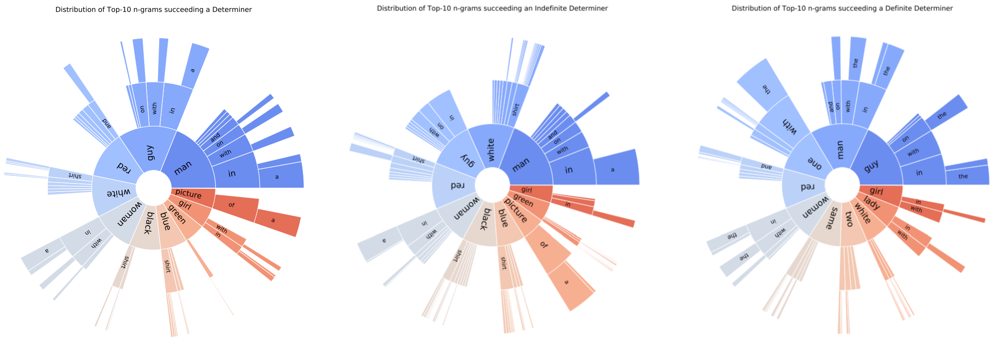

Analysis
In-Game AnalysisInter-Game Analysis
By tracking participants through up to five games of five rounds each, the PhotoBook dataset allows for investigating both in-game and inter-game effects. An in-depth analysis of both of these dimensions can be found in chapter 5 of Janosch Haber's Master's Thesis
Janosch Haber.The following sections will highlight some of the central features and observations of the PhotoBook Dataset.
How should we call it? - Introducing the PhotoBook Conversation Task and Dataset
for Training Natural Referring Expression Generation in Artificial Dialogue Agents.
Master’s Thesis. University of Amsterdam. Amsterdam, The Netherlands, 2018
In-Game Analysis
In this section we focus on the analysis of participants’ interaction during a game of five labelling rounds. Our data here largely confirms the observations concerning participants’ task efficiency and language use during a multi-round communication task made by seminal, small-scale experiments such as those by Krauss and Weinheimer (1964); Clark and Wilkes-Gibbs (1986); Brennan and Clark (1996) and, due to its scale, offers additional aspects for further investigation.Task Efficiency
 Completing the first round of the PhotoBook task takes participants an average of almost three minutes. Completing the fifth round on the other hand takes them about half that time. As Figure 1a shows, this decline roughly follows a negative logarithmic function, with significant differences between rounds 1, 2, 3 and 4, and plateauing towards the last round. The number of messages sent by participants as well as the average message length follow a similar pattern, significantly decreasing between consecutive game rounds. The average number of correct image labels, on the other hand, significantly increases between the first and last round of the game (cf. the red dashed graph in Figure 1a). As a result, task efficiency as calculated by points per minute significantly increases with each game round.Linguistic Properties of Utterances
To get a better understanding of how participants increase task efficiency and shorten their utterances, we analyse how the linguistic characteristics of messages change over a game. We calculated a normalised content word ratio by dividing the count of content words by the total token count. This results in an almost linear increase of content tokens over total token ratio throughout a game (average Pearson’s r per game of 0.34, p < 0.05, see Figure 1b).With referring expressions and messages in general getting shorter, content words thus appear to be favoured to remain. We also observe that participants reuse these content words. Figure 1c shows the number of novel content tokens per game round, which roughly follows a negative logarithmic function. This supports the hypothesis of participants establishing a conceptual pact on the referring expression attached to a specific referent: Once accepted, a referring expression is typically refined through shortening rather than by reformulating or adding novel information (cf., Brennan and Clark, 1996).
We also analysed in more detail the distribution of word classes per game round by tagging messages with the NLTK POS-Tagger. Figure 1d displays the relative changes in content-word-class usage between the first round and last round of a game. All content word classes but verbs show a relative increase in occurrence, most prominently nouns with a 20% relative increase. The case of adverbs, which show a 12% relative increase, is particular: Manual examination showed that most adverbs are not used to described images but rather to flag that a given image has already appeared before or to confirm/reject (‘again’ and ‘too’ make up 21% of all adverb occurrences; about 36% are ‘not’, ‘n’t’ and ‘yes’).
These results indicate that interlocutors are most likely to retain the nouns and adjectives of a developing referring expression, while increasingly dropping verbs, as well as prepositions and determiners. A special role here takes definite determiner ‘the’, which, in spite of the stark decline of determiners in general, increases by 13% in absolute occurrence counts between the first and last round of a game, suggesting a shift towards known information.
Finally, in contrast to current visual dialogue datasets (Das et al., 2017; De Vries et al., 2017) which exclusively contain sequences of questionanswer pairs, the PhotoBook dataset includes diverse dialogue acts. Qualitative examination shows that, not surprisingly, a large proportion of messages include an image description. These descriptions however are interleaved with clarification questions, acceptances/rejections, and acknowledgements.
Inter-Game Analysis
The PhotoBook task was completed by pairs of a total of 1514 unique workers, of which 472 only completed a single game, 448 completed between two and four games and 594 the maximum of five games (see Figure 2a for a full overview). Completing a full five-round game took an average of 14.2 minutes, with times ranging from 4 minutes to some scattered outliers of up to 53 minutes (see Figure 2b). Grouping games by the order in which they were completed by the participants, we follow Brennan and Clark (1996) and investigate the effect of participants completing multiple consecutive games. Similar to their results, Figure 2c shows that the average game time decreases per subsequent game in the PhotoBook task as well.
Scores
With three highlighted images per player per round, during a full game of five rounds 30 labelling decisions have to be made. On average, participants correctly label 28.62 out of these 30. 39% of all games reached full scores, and only 1.2% of all completed games did not reach our pre-set minimum score of 24 points (see Figure 3a). Investigating the game scores obtained in subsequent games (Figure 3b), we can observe a slight drop in game score between the first and second game, followed by a continuous increase in score until they surpass the first game’s score in the fourth one. All of these relative changes in game score however are below significance level when compared to the respective previous game score. Filtering all games of participants that did not complete the full set of five games results in a convex graph, with the third game scoring lowest (Figure 3c, all relative changes with respect to the previous game’s scores are non-significant).
Order of Selections
 Figure 4 shows the distribution of games where the nth selection per game round was either an image that was selected in a previous round or a selection of an image that was selected for the first time during that round. While an in-depth comparison of these statistics per round is a non-trivial endeavour because the percentage of previously selected pictures increases throughout a game (given the limited set of candidate images in a game), the graph clearly shows that within a single game round participants tend to first select (and therefore refer to) images that were selected in a previous round already, and only later turn to those images that need to be selected for the first time. This preference holds throughout all later rounds of the game.Linguistic Analysis
 The figures above show a sample of the in-depth lignuistic analysis of the PhotoBook dataset reported in Janosch Haber's thesis. The left figure for example displays the ten most frequent words succeeding a determiner, together with a distribution of the n-grams succeeding them. Persons and colours here seem to play a central role in developing image descriptions and re-references. In order to further investigate any structural differences in descriptions and references, we split the n-grams into two groups, one succeeding indefinite determiners (center) and those following a definite determiner (right). In the former case the distribution is very similar to that of the overlall most frequent words in 5a. In the latter case we however can observe some differences to the other two distributions with tri-grams starting with ’one’ and ’same’ entering the top 10. Both of them indicate references to previously seen images (i.e. ’the one with the big teddy bear’ or ’the same red bus as last round’).References
- Susan E. Brennan and Herbert H. Clark. 1996. Conceptual pacts and lexical choice in conversation. Journal of Experimental Psychology: Learning, Memory, and Cognition, 22:1482–1493.
- Herbert H. Clark. 1996. Using Language. ’Using’ Linguistic Books. Cambridge University Press.
- Herbert H. Clark and Deanna Wilkes-Gibbs. 1986. Referring as a collaborative process. Cognition, 22(1):1 – 39.
- Abhishek Das, Satwik Kottur, Khushi Gupta, Avi Singh, Deshraj Yadav, Jose M.F. Moura, Devi ´ Parikh, and Dhruv Batra. 2017. Visual Dialog. In Proceedings of CVPR.
- Harm De Vries, Florian Strub, Jermie Mary, Hugo Larochelle, Olivier Pietquin, and Aaron Courville. 2017b. Modulating early visual processing by language. In Proceedings of NIPS
- Robert M. Krauss and Sidney Weinheimer. 1964. Changes in reference phrases as a function of frequency of usage in social interaction: a preliminary study. Psychonomic Science, 1(1):113–114.